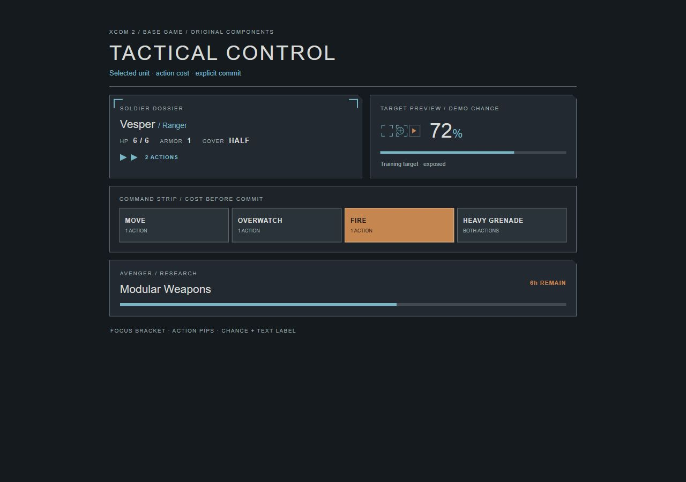
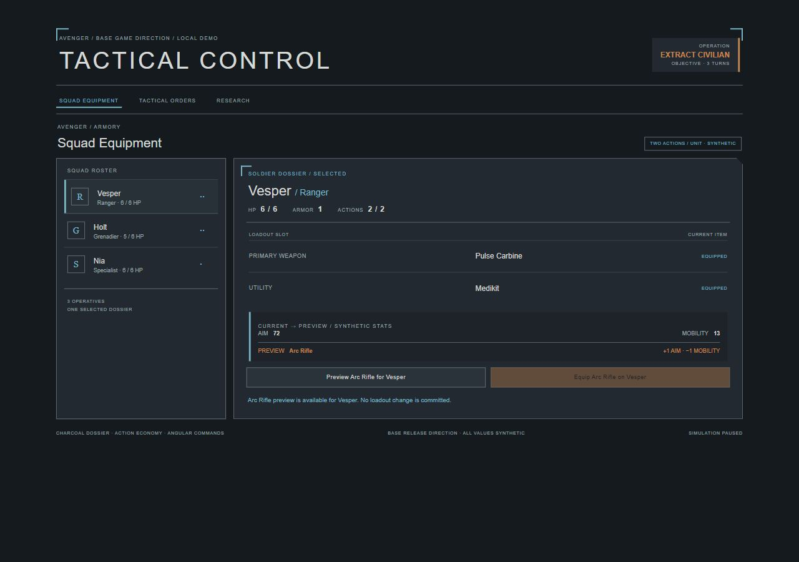
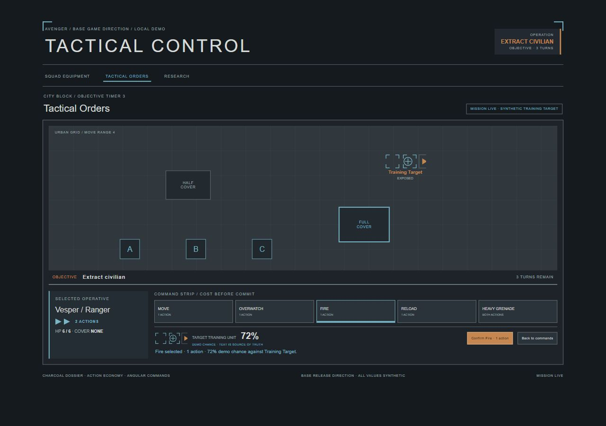
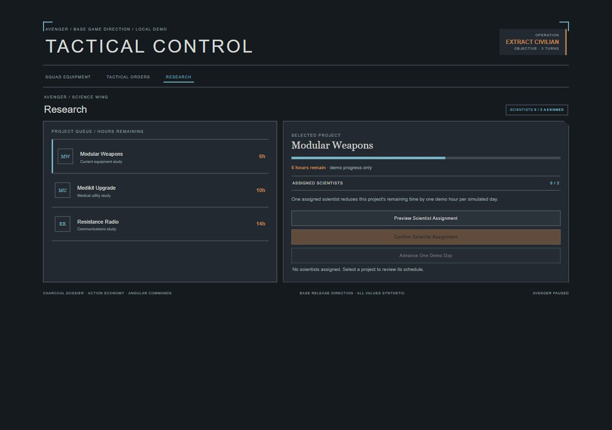

Game UI
Game UIXCOM 2 / V1.0.0
幽浮 2
一套规则，多种界面。
扫描线、蓝色全息层、行动图标、命中率与队员档案。
基础版 / WotC 分开
实验性参考包 · Luna / max 作者与独立使用代理 · 本地 Web 示例

查看包内组件样品 ↗01 / INDEPENDENT IMPLEMENTATION
同一 Skill 的三个界面
浏览器检查已完成；具体交互和屏宽记录见 JSON。

SQUAD-EQUIPMENT
Squad Equipment ↗
Soldier dossier, loadout slots, action identity and current-to-preview comparisons.

TACTICAL-ORDERS
Tactical Orders ↗
Low-chrome playfield with selected soldier, action costs, cover preview and demo hit chance.

RESEARCH
Research ↗
Compact project list, scientist assignment and remaining-hour progress.
02 / WHAT YOUR AI READS
参考、组件、规则，一起交给 AI。

示例需求
使用 xcom-2-ui Skill。先读取 SKILL.md、视觉规则、组件和参考图，再为我的游戏制作：Squad Equipment、Tactical Orders、Research。复用本地素材，保留可编辑文字和真实交互状态。
04 / EVIDENCE AND LIMITS
制作记录与验证范围
与星际争霸常驻 RTS 控制台区分：以回合命令、队员档案与基地运营为主。
- Squad values, hit chance, project duration and equipment changes are synthetic.
- Vector marks are original; no official XCOM art or font is included.
- War of the Chosen and expansion UI are excluded.
独立代理按冻结输入制作，均为 Luna / max。实验仅覆盖 Web 原型；游戏名称标识参考方向。未验证跨模型稳定性、引擎导出或 Figma 文件。素材与许可见包内来源记录。